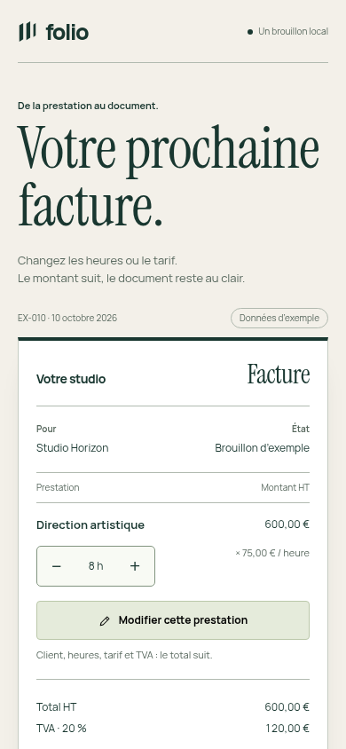
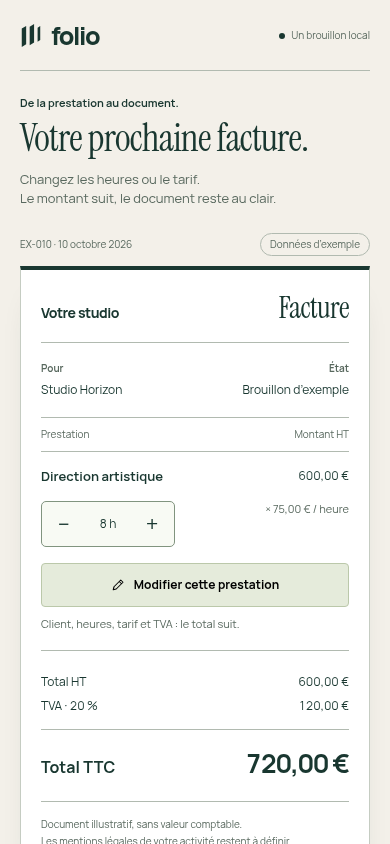
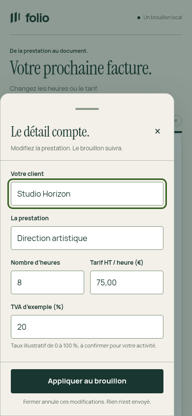
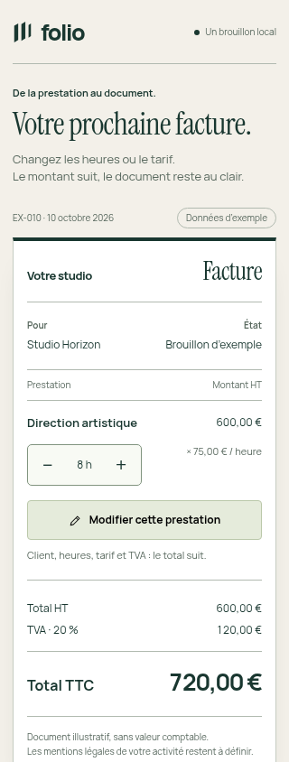

Essai du coordinateur, hors U6. L’entrée réduite rend le total visible dans le premier écran mobile ; les deux compositions utilisent le même contenu et les mêmes fontes.




53 parcours réussis dans Chromium. Clavier logiciel, Safari, lecteur d’écran et fluidité sur téléphone physique restent non vérifiés. Les montants sont illustratifs.